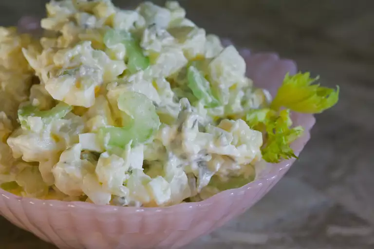

Potato Salad

Description
Potato salad is an excellent salad to go with any dish.
Ingredients
- 5 potatoes.
- 3 eggs, hardboiled.
- 1 cup chopped celery.
- 1/2 cup chopped onion.
- 1/2 cup sweet pickle relish.
- 1/4 cup mayonnaise.
- 1 tablespoon prepared mustard.
- 1/4 teaspoon garlic salt.
- 1/4 teaspoon celery salt.
Directions
- Bring a large pot of salted water to a boil. Add potatoes and cook until tender but still firm, about 15 minutes. Drain, cool, peel and chop.
- While potatoes cook, place eggs in a saucepan and cover with cold water. Bring water to a boil; cover, remove from heat, and let eggs stand in hot water for 10 to 12 minutes. Remove from hot water, cool, peel and chop.
- Combine the potatoes, eggs, celery, onion, relish, mayonnaise, mustard, garlic salt, celery salt, and pepper in a large bowl. Mix together well and refrigerate until chilled.